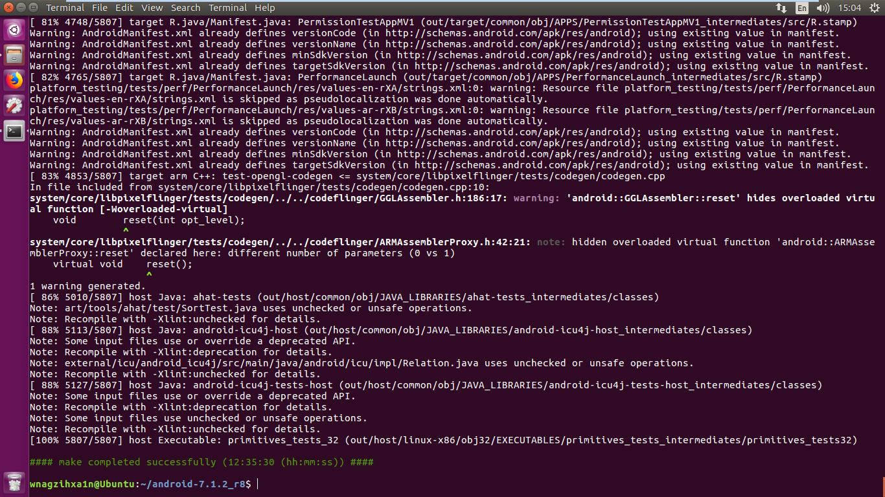

Author：wnagzihxa1n
Mail：tudouboom@163.com
参考清华提供的AOSP使用方法
谷歌的机型与系统对应表
因为现在要复现一个漏洞，所以要下载7.x的系统，再考虑到适配的机型数量问题，所以选择
N2G47O android-7.1.2_r8 Nougat Nexus 5X, Nexus 6P, Pixel XL, Pixel, Pixel C
先安装Ubuntu16.04 64位的系统，然后开始配置
首先是安装依赖库
wnagzihxa1n@Ubuntu:~$ sudo apt-get install git libx11-dev:i386 libreadline6-dev:i386 libgl1-mesa-dev g++-multilib flex bison gperf build-essential libncurses5-dev:i386 tofrodos python-markdown libxml2-utils xsltproc zlib1g-dev:i386 dpkg-dev libsdl1.2-dev libesd0-dev gnupg flex bison gperf build-essential zip curl zlib1g-dev gcc-multilib g++-multilib libc6-dev-i386 lib32ncurses5-dev x11proto-core-dev libx11-dev libgl1-mesa-dev libxml2-utils xsltproc unzip m4 lib32z-dev ccache
初始化repo
wnagzihxa1n@Ubuntu:~$ mkdir ~/bin
wnagzihxa1n@Ubuntu:~$ PATH=~/bin:$PATH
wnagzihxa1n@Ubuntu:~$ curl https://mirrors.tuna.tsinghua.edu.cn/git/git-repo > ~/bin/repo
wnagzihxa1n@Ubuntu:~$ chmod a+x ~/bin/repo
添加环境变量更新repo，重启终端
wnagzihxa1n@Ubuntu:~$ sudo gedit ~/.bashrc
下面的写进去
export REPO_URL='https://mirrors.tuna.tsinghua.edu.cn/git/git-repo/'
或者修改repo，把上面这句替换掉谷歌那句
配置git
wnagzihxa1n@Ubuntu:~$ git config --global user.email "wangzhixian618@163.com"
wnagzihxa1n@Ubuntu:~$ git config --global user.name "wnagzihxa1n"
创建文件夹
wnagzihxa1n@Ubuntu:~$ mkdir android-7.1.2_r8
进入
wnagzihxa1n@Ubuntu:~$ cd android-7.1.2_r8
初始化分支，需要哪个分支参考最前面的那个链接
wnagzihxa1n@Ubuntu:~/android-7.1.2_r8$ repo init -u https://aosp.tuna.tsinghua.edu.cn/platform/manifest -b android-7.1.2_r8
因为网络经常会断，自动续传脚本
repo sync
while [ $? == 1 ]; do
sleep 3
repo sync
done
该版本的安卓源码需要OpenJDK 8进行编译，不需要配置，直接安装即可
wnagzihxa1n@Ubuntu:~$ sudo apt install openjdk-8-jdk-headless
一般情况下都是用虚拟机编译，所以需要查看下CPU
wnagzihxa1n@Ubuntu:~$ cproc
2
选择编译类型
wnagzihxa1n@Ubuntu:~/android-7.1.2_r8$ source build/envsetup.sh
wnagzihxa1n@Ubuntu:~/android-7.1.2_r8$ lunch
直接回车
wnagzihxa1n@Ubuntu:~/android-7.1.2_r8$ lunch
You're building on Linux
Lunch menu... pick a combo:
1. aosp_arm-eng
2. aosp_arm64-eng
3. aosp_mips-eng
4. aosp_mips64-eng
5. aosp_x86-eng
6. aosp_x86_64-eng
7. full_fugu-userdebug
8. aosp_fugu-userdebug
9. mini_emulator_arm64-userdebug
10. m_e_arm-userdebug
11. m_e_mips64-eng
12. m_e_mips-userdebug
13. mini_emulator_x86_64-userdebug
14. mini_emulator_x86-userdebug
15. aosp_dragon-userdebug
16. aosp_dragon-eng
17. aosp_marlin-userdebug
18. aosp_sailfish-userdebug
19. aosp_flounder-userdebug
20. aosp_angler-userdebug
21. aosp_bullhead-userdebug
22. hikey-userdebug
23. aosp_shamu-userdebug
Which would you like? [aosp_arm-eng]
开始编译
wnagzihxa1n@Ubuntu:~/android-7.1.2_r8$ make -j2
编译完成

运行起来看看效果，选择刚刚编译的版本
wnagzihxa1n@Ubuntu:~/android-7.1.2_r8$ lunch
查看当前用户
wnagzihxa1n@Ubuntu:~$ adb shell
generic:/ # id
uid=0(root) gid=0(root) groups=0(root),1004(input),1007(log),1011(adb),1015(sdcard_rw),1028(sdcard_r),3001(net_bt_admin),3002(net_bt),3003(inet),3006(net_bw_stats),3009(readproc) context=u:r:su:s0
generic:/ # whoami
root
如果是虚拟机编译且分配的内存小于8G，需要修改一下，不然会出现下面的错误
[ 34% 12241/35670] Building with Jack: out/target/common/obj/JAVA_LIBRARIES/libprotobuf-java-nano_intermediates/classes.jack
ninja: build stopped: subcommand failed.
build/core/ninja.mk:148: recipe for target 'ninja_wrapper' failed
make: *** [ninja_wrapper] Error 1
#### make failed to build some targets (02:18:35 (hh:mm:ss)) ####
打开文件
wnagzihxa1n@Ubuntu:~/android-7.1.2_r8$ gedit prebuilts/sdk/tools/jack-admin
找到这句
JACK_SERVER_COMMAND="java -XX:MaxJavaStackTraceDepth=-1 -Djava.io.tmpdir=$TMPDIR $JACK_SERVER_VM_ARGUMENTS -cp $LAUNCHER_JAR $LAUNCHER_NAME"
改为
JACK_SERVER_COMMAND="java -XX:MaxJavaStackTraceDepth=-1 -Djava.io.tmpdir=$TMPDIR $JACK_SERVER_VM_ARGUMENTS -Xmx4096M -cp $LAUNCHER_JAR $LAUNCHER_NAME"
如果是跑起来后发现出现上面这个错误需要先关闭Jack服务
wnagzihxa1n@Ubuntu:~/android-7.1.2_r8$ ./prebuilts/sdk/tools/jack-admin stop-server
重新lunch，选择编译类型再make
注意不能关闭Jack服务直接make